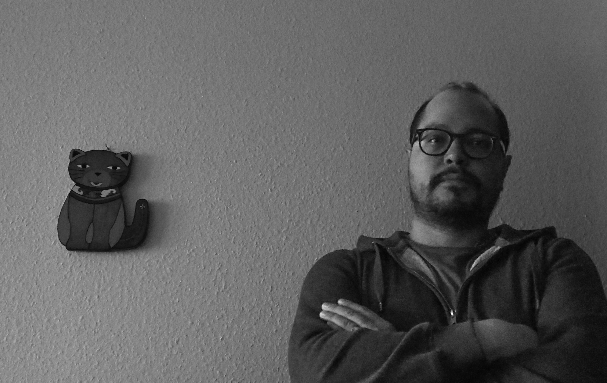

International mongrel, Antoine is born in San Salvador, El Salvador. A mother from Armenia and an Argentinian father, both French as well, makes Antoine speak French and Spanish. He now lives in Geneva, Switzerland as a Swiss citizen.
He studied Latin until he was sixteen, but science and the understanding of the environment guided his future. He studied then environmental sciences at Swiss Federal Institute of Technology Lausanne and at the University of Lausanne and computer engineering at HEPIA in Geneva. Since then, he keeps trying to understand the world.
Antoine is also an artist trying to capture his surroundings with a camera and uses visual storytelling to expose and tell what he sees.
Antoine is currently a computer engineering student at HEPIA-Geneva with a background in Environmental sciences and engineering from EPFL and UNIL in Lausanne, Switzerland. He worked on different geoscience and science projects like ice-cap depletion simulation and physics-based simulation in Mechanics. He has a unique expertise in both environmental and computer engineering and moreover he is passionate about Machine learning and pattern recognition, especially in Environmental and Earth sciences.
He offers a panel of services ranging from pattern recognition and Machine learning, GIS programming on QGIS and data analysis in environmental and Earth sciences, among others.